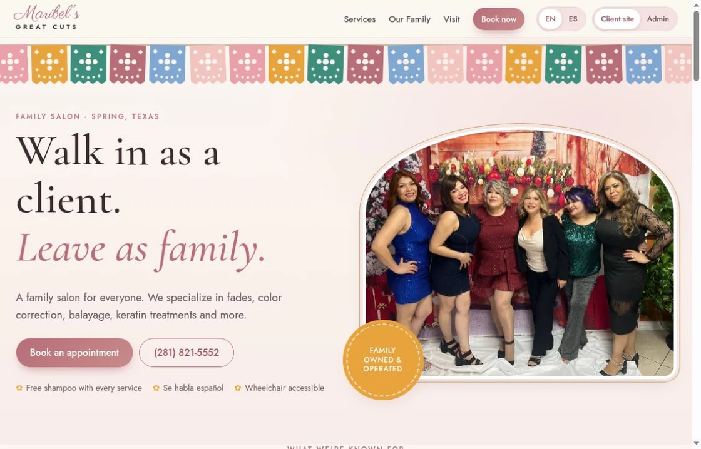
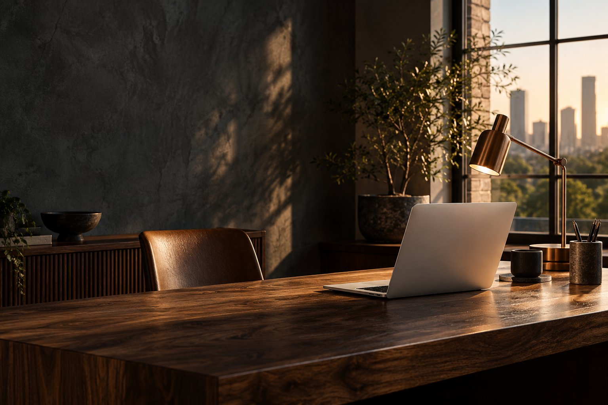
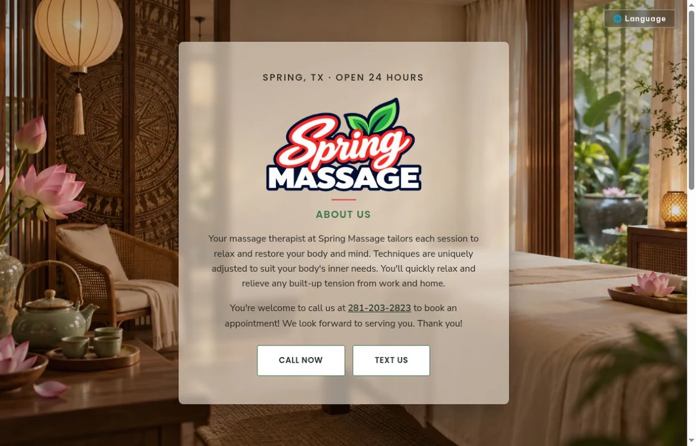
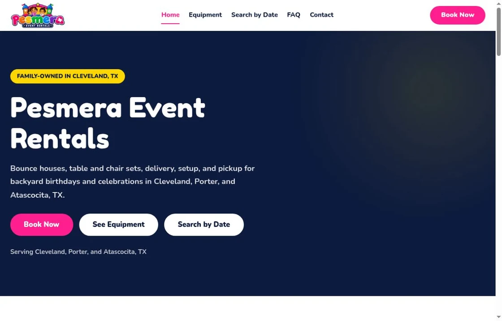

Maribel’s
Great Cuts
A warm digital welcome for a family salon in Spring, Texas. A clear home for its services, people and customer information.
Explore the website (opens in a new tab)Independent builder · Houston, Texas
I’m José, founder of Vasquez Digital Solutions. I bring thoughtful design and practical technology together to make things that work beautifully.

The person behind the work
I’m José, an independent builder based in Houston. Vasquez Digital Solutions is where my work comes together: websites for local businesses, useful apps, and ideas worth exploring.
I start with what you need to do. Then I shape the design, the content and the technology around it. Clear purpose. Considered details. A straightforward way forward.
Selected work
A few projects from the workbench. Each with its own personality and purpose.

A warm digital welcome for a family salon in Spring, Texas. A clear home for its services, people and customer information.
Explore the website (opens in a new tab)
A focused, welcoming website that makes it easy to find the business and get in touch.
Explore the website (opens in a new tab)
A digital home for a family-owned rental business, with equipment, packages and local information in one place.
Explore the website (opens in a new tab)Project previews are screenshots of the public websites, captured October 2026. Live content may change.
From the first question to the final detail
A considered home for your business. Clear content, intuitive navigation and a design that feels like you.
Design · Content · Development
Focused apps and digital workflows shaped around a specific need, with the everyday experience in mind.
Apps · Interfaces · Workflows
The details that help people find what they need, understand your business and take the next step.
Structure · Accessibility · Discovery
On the workbench
Personal tools and a more thoughtful way to start a project.
My personal workspace for keeping ideas, research and work in view.
Open Daily Desk (opens in a new tab)Private development app. Existing authorized sign-in is required.
A guided way to organize an idea, your goals and the details that matter before a conversation.
Explore the brief previewWorks in your browser. No account, private project access or online submission.
Let’s make something useful
A new website, a better way to work, or an idea you’re still figuring out. Tell me a little about it.
info@vasmedia.net